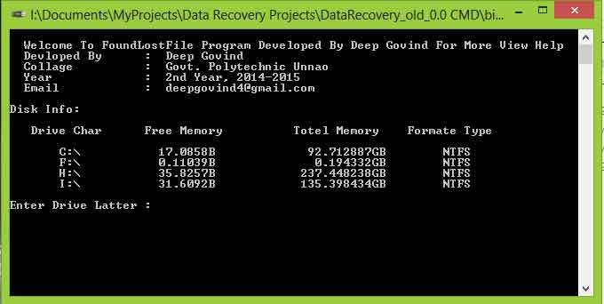
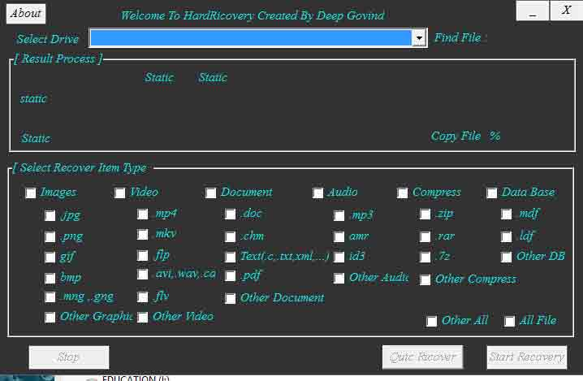
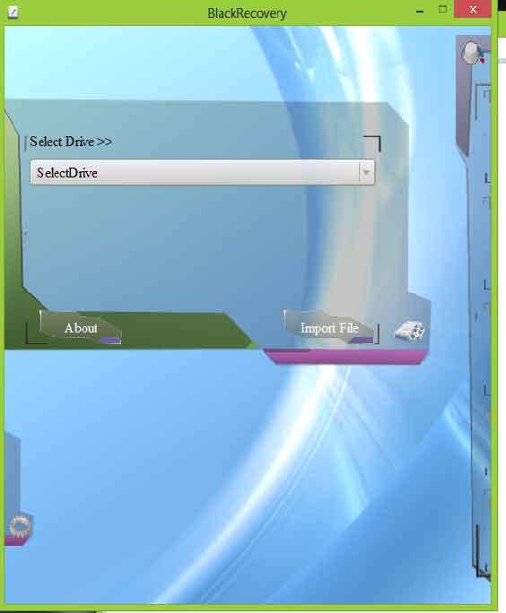

| Project Name : |
Data Recovery Software |
| Projects Details : |
Data Recovery Software is a Program that Recover all deleted And formatted File from your Storage Device Like- HDD, Floppy, Pen-drive……..etc.
This software give a UI for recover a drive you need to select a drive and file type to recover, all deleted file will list in list box you can select one or more file and recover them. This software also provide a option of exporting of scanned file for recover next time without scanning. There are also available multiple user interface design and animated UI as you like . Data Recovery is a program that recover all delete , format , crash data from any drive such as HDD , Floppy , pen-drive , memory card ,…etc. This project has been planned to be find lost data. All user simple use this software. This software
available only Windows OS. |
| Project Virsion : |
1) Data Recovery 0.0 ( CMD Mode Simple )
2) Data Recovery 0.2 ( CMD Mode Simple )
3) Data Recovery 0.5 ( CMD Mode Simple )
4) Data Recovery 1.0 ( GUI Mode Available ) ( Written in VC++) ( No List Of Delete File Direct
Recover )
5) Data Recovery 2.0 ( GUI Mode Available ) ( Written in Qt with C++) (List Of Delete File Avalible )
|
| Programming Language : |
C & C++ , VC++ , CSS |
| Library : |
Windows System , Qt 5.7 |
| Image No : |
Data Recovery CMD , Data Recovery GUI VC++ ,Data Recovery GUI Qt |
| Project Image : |


 |
| Download Projects : |
DataRecovery0.0 CMD_Bin DataRecovery 0.0 CMD_src DataRicoverySoft 1.0 GUI VC++ Src DataRicoverySoft-2.0 GUI Qt Src |
|